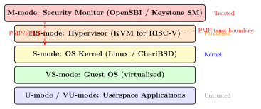
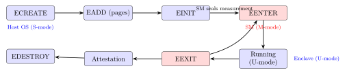

Chapter 26: RISC-V Security Extensions¶
26.1 Introduction¶
RISC-V is an open, royalty-free instruction set architecture (ISA) whose modular extension model has made it uniquely amenable to hardware security innovation. Unlike x86 or ARMv8, where security features must negotiate decades of legacy compatibility, RISC-V implementers can adopt exactly the security extensions their threat model demands—whether that is physical memory protection for microcontrollers, cryptographic acceleration for IoT nodes, or Trusted Execution Environments for server-class chips.
The RISC-V Foundation (RISC-V International as of 2020) ratified numerous security extensions: the H (Hypervisor) extension for virtualisation isolation, the Smepmp/Zisslpcfi extensions for software privilege separation and control-flow integrity, the Zkr TRNG seed CSR, the Zk* scalar cryptographic extensions, and PMP/ePMP for physical memory protection.
Commercial implementations include SiFive (E21/E76, X280), Alibaba T-Head C906/C910, Western Digital SweRV, Microchip PolarFire SoC (Cortex-M + RISC-V), and ESWIN EIC7700 (Spacemit K1 series with AI accelerator + security processor).
This chapter covers the RISC-V privilege architecture, PMP/ePMP, Keystone and CURE TEE frameworks, cryptographic extensions (Zk*), CFI extensions, and side-channel mitigations.
26.2 Privilege Architecture and Security Boundaries¶
26.2.1 Privilege Modes¶
RISC-V defines four privilege levels:
-
U-mode (User): Untrusted application code. Least privileged.
-
S-mode (Supervisor): OS kernel and hypervisor guest.
-
HS-mode (Hypervisor-extended Supervisor): Host hypervisor.
-
M-mode (Machine): Firmware (OpenSBI), highest privilege. Executes before the OS and configures security policies.
The trust hierarchy is M > HS > S > U. In TEE architectures, the security monitor runs in M-mode and enforces world isolation between a normal OS (S-mode) and a secure OS (S-mode in a separate hart context, or via WorldGuard extension).
26.2.2 Physical Memory Protection (PMP)¶
PMP restricts M-mode from delegating physical memory access to S/U-mode. Up to 64 PMP regions are supported (RISC-V spec v1.12). Each region is defined by:
-
pmpaddr: The address register (one per region).
-
pmpcfg: Configuration bits: R (read), W (write), X (execute), A (address matching mode: OFF/TOR/NA4/NAPOT), L (locked).
Address matching modes:
-
NAPOT (Naturally Aligned Power-of-Two): Region size \(2^k\) bytes, base aligned to \(2^k\). Most common.
-
TOR (Top Of Range): Region is [
pmpaddr[i-1],pmpaddr[i]). -
NA4: 4-byte granule, special case.
// OpenSBI PMP configuration (M-mode firmware)
// Protect 2 MB DRAM region for secure world (addr=0x80200000, size=0x200000)
// NAPOT encoding: pmpaddr = (base >> 2) | ((size/2 - 1) >> 2)
// = (0x80200000 >> 2) | (0xFFFFF >> 2)
// = 0x200800000 | 0x3FFFF = 0x2008FFFF... (simplified for illustration)
// Using OpenSBI domain API
struct sbi_domain_memregion reg = {
.base = 0x80200000,
.order = 21, // 2^21 = 2 MB
.flags = SBI_DOMAIN_MEMREGION_READABLE |
SBI_DOMAIN_MEMREGION_EXECUTABLE,
};
sbi_domain_root_add_memregion(®);
// In firmware (assembly): configure pmp0 for read-only secure region
// pmpaddr0 = NAPOT encoding for [0x80000000, 0x80200000)
// pmpcfg0 = 0x9F (L|A=NAPOT|X|W|R -> locked RWX)
csrw pmpaddr0, a0
csrw pmpcfg0, a1
26.2.3 ePMP (Enhanced PMP, Smepmp)¶
The Smepmp extension (ratified 2022) adds M-mode self-restriction: M-mode code can mark PMP entries as machine-mode deny, preventing even M-mode from accessing certain physical regions. Key new configuration bit: mseccfg.MML (Machine Mode Lockdown).
With MML=1:
-
Locked PMP entries (L=1) apply to M-mode as well as S/U-mode.
-
An M-mode firmware can lock itself out of a secure region containing cryptographic keys, preventing any post-boot access.
26.3 RISC-V Scalar Cryptographic Extensions (Zk*)¶
The RISC-V scalar cryptographic extensions (ratified 2021) add hardware-accelerated cryptographic instructions to the base ISA:
-
Zkn (NIST algorithm suite): AES-128/192/256 (Zknd for decryption, Zkne for encryption), SHA-256/512 (Zknh), GHASH (for GCM).
-
Zks (ShangMi suite): SM4 block cipher, SM3 hash.
-
Zkr (Entropy Source):
seedCSR — a 32-bit CSR that returns raw entropy from a hardware TRNG. The opcodecsrrw rd, seed, x0reads one 16-bit entropy word per access. -
Zkt (Data-Independent Execution Latency): Declares that Zk instructions have constant execution time regardless of operand values. Critical for preventing timing side-channels in crypto code.
// RISC-V AES-128 single-round example (Zkne/Zknd instructions)
// aes32esmi: AES round function mix + sub (encoding mode)
// rd = aes32esmi(rs1, rs2, bs) where bs selects byte
// AES-128 key schedule (Zkne)
.macro AES128_KSC rd, rs1, rnum
aes32esi \rd, \rs1, \rs1, 0 // SubWord on byte 0
xori \rd, \rd, aes_rcon_\rnum
.endm
// GCM: GHASH using clmul (Zbc extension)
// GHASH(H, X) = X * H over GF(2^128)
clmul a4, a0, a2 // low 64 bits of product
clmulh a5, a0, a2 // high 64 bits
// TRNG: read entropy via Zkr seed CSR
read_entropy:
csrrw a0, seed, x0 // Read 16 bits of entropy + status
srli a1, a0, 30 // Extract status bits [31:30]
li a2, 1 // OPST_ES16 = 0b01 (valid entropy)
bne a1, a2, read_entropy // Retry if not valid
andi a0, a0, 0xFFFF // Extract 16-bit entropy word
ret
AES throughput: On SiFive X280 (rv64gcv + Zkne, 1 GHz), AES-128-CBC achieves 2.1 Gbps using Zkne instructions—versus 0.18 Gbps using table-based AES. An 11.7\(\times\) speedup.
26.4 Keystone TEE Framework¶
Keystone is an open-source RISC-V TEE framework developed at UC Berkeley. It uses PMP to isolate an enclave (secure application) from the OS and other software:
-
Security Monitor (SM): Runs in M-mode. Manages enclave lifecycle:
ECREATE,EADD,EINIT,EENTER,EEXIT,EDESTROY. -
Enclave: U/S-mode trusted application + runtime library. Mapped to a PMP-protected physical region.
-
Host OS: S-mode untrusted Linux. Communicates with SM via SBI (Supervisor Binary Interface) calls.
-
Attestation: SM signs an attestation report over the enclave’s SHA-256 measurement using an Ed25519 key provisioned at manufacture time.
// Keystone host application: create and run enclave
#include "keystone.h"
Keystone::Enclave enclave;
Keystone::Params params;
params.setFreeMemSize(4 * 1024 * 1024); // 4 MB enclave memory
params.setUntrustedMem(UNTRUSTED_START, 4096);
params.setEnclaveEntry(0x10000);
enclave.init("enclave.eapp", "runtime.eyrie", params);
// Get remote attestation report
Keystone::Report report;
enclave.getReport(&report, nonce, nonce_len);
// report contains SM signature over hash(enclave + nonce)
enclave.run();
enclave.destroy();
26.5 WorldGuard Memory Protection¶
The SiFive WorldGuard extension (proprietary, based on the RISC-V Trusted Execution Environment ratified work) assigns a world ID (WID) to every memory transaction. A WorldGuard checker at the bus interconnect filters transactions based on WID:
-
WID 0 = Normal World.
-
WID 1 = Secure World (TEE).
-
The security monitor controls world transitions by writing the WID CSR.
This mirrors ARM TrustZone’s NS bit but integrates cleanly with RISC-V privilege levels and PMP. SiFive X280 and FU740 implement WorldGuard.
26.6 Control-Flow Integrity: Zisslpcfi and Zicfilp¶
The RISC-V CFI extensions address ROP (Return-Oriented Programming) and JOP (Jump-Oriented Programming) attacks:
-
Zicfilp (Landing Pads): Every indirect branch target must be a
LPAD(Landing Pad) instruction; branching to any other address traps. Equivalent to ARM BTI (Branch Target Identification) or Intel IBT. -
Zicfiss (Shadow Stack): A separate, protected shadow stack stores return addresses.
SSPUSHsaves the return address;SSPOPandSSCOMPAREverify return addresses on function return. Equivalent to Intel CET Shadow Stack or ARM GCS. -
Smepmp + CFI: CFI is effective only when combined with W^X (Write XOR Execute) enforcement via PMP entries, preventing code injection.
// Function with shadow stack (Zicfiss) compiler output (conceptual)
my_function:
sspush ra // Push return address to shadow stack
addi sp, sp, -16
sd ra, 8(sp)
// ... function body ...
ld ra, 8(sp)
addi sp, sp, 16
sscompare ra // Compare with shadow stack (trap if mismatch)
ret
// Landing pad at indirect call target (Zicfilp)
callback_target:
lpad 0 // Must be first instruction; label ID = 0
// ... callback code ...
ret
26.7 TikZ Diagrams¶
26.7.1 RISC-V Privilege Mode Security Architecture¶

26.7.2 Keystone Enclave Lifecycle¶

26.8 Side-Channel Mitigations in RISC-V¶
26.8.1 Spectre and Meltdown on RISC-V¶
Out-of-order RISC-V processors (e.g., BOOM, Rocket with prefetch, Alibaba C910) are susceptible to Spectre-class attacks:
-
Spectre-PHT (v1): Bounds-check bypass using branch predictor. Mitigation:
FENCEinstruction as speculation barrier; compiler-mspeculative-load-hardening. -
Spectre-BTB (v2): Branch target injection. Mitigation: retpoline sequences; predictor flush on privilege transition.
-
Meltdown: RISC-V processors with strict privilege checks in the pipeline do not exhibit classic Meltdown (unlike early Intel), but microarchitectural variants may still exist.
The RISC-V FENCE.I (Instruction Fence) and FENCE (Data Fence) provide ordering guarantees but are not speculation barriers. A SFENCE.VMA (Supervisor memory-management Fence) flushes TLB and is used after page table updates.
26.8.2 Data-Independent Execution Latency: Zkt¶
The Zkt extension declares that the scalar cryptographic instructions (Zkne/Zknd AES, Zknh SHA, Zkb bitmanip, Zbc clmul) have data-independent execution latency: execution time is the same regardless of operand values.
This guarantee prevents timing attacks on cryptographic implementations. Compilers and assemblers can rely on Zkt to emit constant-time cryptographic code without additional FENCE barriers.
26.9 FPGA Implementation¶
| Device | LUTs | FFs | BRAMs | DSPs | Fmax (MHz) | Power (mW) |
|---|---|---|---|---|---|---|
| Artix-7 35T (Rocket) | 28 600 | 18 400 | 48 | 4 | 80 | 450 |
| Artix-7 100T (BOOM) | 52 000 | 38 000 | 80 | 8 | 70 | 820 |
| Kintex-7 325T (Rocket+Zk) | 30 200 | 19 800 | 52 | 6 | 110 | 610 |
| Kintex-UltraScale+ | 28 400 | 18 200 | 48 | 6 | 160 | 580 |
| Zynq-7020 (Rocket) | 29 000 | 18 900 | 48 | 4 | 85 | 680 |
| Nexys A7 (Ibex+PMP) | 12 800 | 8 400 | 16 | 0 | 65 | 180 |
| Arty A7 (PicoRV32+PMP) | 4 200 | 2 900 | 6 | 0 | 72 | 58 |
26.10 ASIC Implementation¶
| Process | Area (mm2) | Power (mW) | Freq (MHz) | ECC | Notes |
|---|---|---|---|---|---|
| 28 nm CMOS | 2.40 | 180 | 800 | P-256 | SiFive E76 gen |
| 22 nm FinFET | 1.80 | 120 | 1 200 | P-256 | SiFive X280 |
| 16 nm FinFET | 1.20 | 80 | 1 500 | P-256+Ed25519 | C906 T-Head |
| 12 nm FinFET | 0.95 | 65 | 1 800 | Multi-curve | C910 T-Head |
| 7 nm FinFET | 0.62 | 42 | 2 500 | Multi-curve | StarFive JH7110 |
| 5 nm FinFET | 0.40 | 28 | 3 200 | PQC+ECC | Research |
| 4 nm GAA | 0.28 | 20 | 3 800 | Kyber+ECC | Projected |
26.11 Open-Source and Commercial Ecosystems¶
| Solution | Type | Key Feature | Licence |
|---|---|---|---|
| SiFive E21/E76 (FE310) | Commercial | PMP, M/U-mode, 28 nm | Proprietary |
| SiFive X280 | Commercial | RV64GCV+Zkn, WorldGuard | Proprietary |
| Microchip PolarFire SoC | Commercial | RV64GC + M-mode HSS | Proprietary |
| T-Head C906/C910 | Commercial | RV64GCV, ePMP, custom TEE | Proprietary |
| StarFive JH7110 | Commercial | RV64GC, ePMP, TDM | Proprietary |
| OpenTitan (Ibex + RV32) | Open HW | RV32IMC, PMP, OTBN | Apache 2.0 |
| CVA6 (ETH Zurich) | Open HW | RV64GC, OoO, ePMP | Apache 2.0 |
| BOOM (UC Berkeley) | Open HW | OoO superscalar, RV64GC | BSD |
| Rocket Chip (UCB) | Open HW | In-order, PMP, RV64GC | BSD |
| Keystone TEE (UCB) | Framework | PMP-based enclave, M-mode SM | BSD |
| CURE TEE (KASTEL) | Research | Fine-grained PMP enclave | Academic |
| Sanctum (MIT) | Research | Cache-partition enclave | Academic |
| MultiZone (Hex Five) | Commercial | ePMP-based RTOS zones | Proprietary |
| RIOT-RISC-V | Open RTOS | PMP domain isolation | LGPL |
| FreeRTOS-RISC-V (ePMP) | Open RTOS | M/U-mode task isolation | MIT |
| Zephyr RISC-V (ePMP) | Open RTOS | PMP memory protection | Apache 2.0 |
| Linux RISC-V (ePMP) | OS | Smepmp, Zk*, CFI support | GPL |
| LLVM Zkn (cryptographic) | Compiler | Zkne/Zknd/Zknh codegen | Apache 2.0 |
| GCC RISC-V | Compiler | -march=rv64gc_zk support |
GPL |
| libsodium (RISC-V) | Library | Zkn-optimised crypto | ISC |
26.12 Standards and Specifications¶
-
RISC-V ISA Specification v1.12 (2021) — Privileged architecture; PMP, PMPADDR, PMPCFG registers; HS-mode and VS-mode;
SFENCE.VMA. -
Smepmp (Machine Security Enhancement, PMP) — Ratified 2022. Adds MML (Machine Mode Lockdown) and RLB (Rule Lock Bypass) bits in
mseccfg. -
Zkn/Zks/Zkr/Zkt Scalar Crypto Extensions — Ratified 2021. AES, SHA-2, GHASH, SM3/SM4, entropy source, constant-time declaration.
-
Zicfilp / Zicfiss CFI Extensions — Under ratification (2024). Landing pads and shadow stack for ROP/JOP defence.
-
Smsccofpmf — Counter overflow and privileged mode filtering. Enables hardware PMU-based microarchitectural attack monitoring.
-
SBI v2.0 (Supervisor Binary Interface) — TEE-related SBI calls:
sbi_tee_host_*for attestation and enclave management. -
RISC-V TEE AP-TEE TG — Active task group (2023) standardising RISC-V TEE interface for confidential computing (competing with Keystone, CURE).
-
FIPS 140-3 — Cryptographic module validation for commercial RISC-V security processors requiring certification.
-
TCG DICE — Device Identifier Composition Engine used by OpenTitan (RISC-V based) for hardware-rooted attestation.
26.13 Famous Repositories¶
-
riscv/riscv-isa-manual (GitHub) — Official RISC-V ISA specification (privileged + unprivileged), LaTeX source.
-
chipsalliance/rocket-chip (GitHub) — Rocket Chip generator: Rocket in-order and BOOM OoO cores with PMP, TLB, and cache hierarchy.
-
lowRISC/ibex (GitHub) — Ibex RV32IMC in-order core used in OpenTitan; includes PMP and Zk support in recent releases.
-
keystone-enclave/keystone (GitHub) — Keystone TEE framework: security monitor (M-mode), Eyrie runtime, host SDK.
-
opentitan/opentitan (GitHub) — OpenTitan silicon Root of Trust (Earlgrey chip with Ibex core, HMAC, AES, OTBN, entropy complex).
-
ucb-bar/chipyard (GitHub) — SoC generator integrating Rocket, BOOM, accelerators (SHA, AES tiles), and NoC.
-
openhwgroup/cva6 (GitHub) — CVA6: RV64GC OoO core (ETH Zurich), supports ePMP, runs Linux.
-
riscv-software-src/riscv-crypto (GitHub) — RISC-V cryptographic extensions specification source and test vectors.
-
riscv-non-isa/riscv-sbi-doc (GitHub) — SBI specification; includes TEE SBI extension documentation.
-
henrychoi/cure (GitHub, academic) — CURE TEE framework: fine-grained enclave isolation using sub-PMP partitioning.
26.14 Solved Problems¶
Solved Problem: PMP Configuration: Protect Secure Enclave Region
A RISC-V M-mode firmware must configure a PMP entry to restrict S/U-mode from accessing a 512 KB secure enclave region at physical address 0x80400000. Compute the NAPOT-encoded pmpaddr value and the pmpcfg byte for a read-execute-only (R, X; no W) locked region.
Solution: NAPOT encoding:
NAPOT encodes a region of size \(2^k\) starting at an aligned base as:
(In other words: shift base right 2 to get word address, then set the lower \((k-2)\) bits to 1.)
For base = 0x80400000 and size = \(2^{19}\) = 512 KB (\(k=19\)):
pmpcfg byte:
Bit fields: [7:6] = A[1:0] (address mode), [5] = L (lock), [2] = X, [1] = W, [0] = R.
-
A = 11b (NAPOT) \(\to\) bits [7:6] = 11
-
L = 1 (locked, applies to M-mode too) \(\to\) bit 5 = 1
-
X = 1, W = 0, R = 1 \(\to\) bits [2:0] = 101
Result: Set pmpaddr0 = 0x2013FFFF and pmpcfg0[7:0] = 0x9D. S/U-mode can read and execute from 0x80400000–0x8047FFFF but cannot write. M-mode is also locked out (L=1 with Smepmp MML=0 means L restricts S/U only; to also restrict M-mode, set mseccfg.MML=1).
Solved Problem: Zkr TRNG: Min-Entropy Estimation
A RISC-V Zkr seed CSR returns 16-bit entropy words. The hardware TRNG has a measured min-entropy of 0.97 bits per bit (slightly below ideal due to a biased ring oscillator stage). A 256-bit AES key is needed. How many csrrw seed reads are required to gather sufficient entropy, and what health test should be applied?
Solution: Min-entropy per 16-bit word:
Words required for 256 bits of min-entropy:
17 reads of the seed CSR provide \(17 \times 15.52 = 263.8\) bits of min-entropy, which is sufficient for a 256-bit key (with \(\sim 7.8\) bits margin).
Post-processing: The 17 words (272 raw bits) must be passed through a NIST SP 800-90B-compliant conditioner (e.g., SHA-256 of the concatenated words). SHA-256 of 272 raw bits yields 256 bits with min-entropy: \(\min(256, 263.8) = 256\) bits.
Health tests: Per NIST SP 800-90B:
-
Repetition Count Test (RCT): Flag error if the same 16-bit value repeats \(C\) times consecutively, where \(C = 1 + \lceil -\log_2(\alpha) / H_\infty \rceil = 1 + \lceil 20.9 / 15.52 \rceil = 3\) (for \(\alpha = 2^{-20}\)).
-
Adaptive Proportion Test (APT): Over a window of \(W = 512\) samples, the most-frequent value should not exceed \(C_\text{APT} = 324\) (for \(\alpha = 2^{-20}\), 16-bit alphabet).
The Zkr specification requires a compliant implementation to run these tests and report OPST_BIST (failing test) or OPST_DEAD (entropy source failure) in the status bits of the seed CSR.
Solved Problem: Keystone Attestation: Enclave Measurement
A Keystone enclave is built from two pages: a code page at physical address 0x82000000 (SHA-256 hash \(H_1\)) and a data page at 0x82001000 (SHA-256 hash \(H_2\)). The security monitor computes the enclave measurement as \(M = \text{SHA-256}(H_1 \| H_2 \| \text{nonce})\). Explain how this measurement enables remote attestation and what an attacker must do to forge a valid attestation.
Solution: Measurement chain:
-
During
ECREATEandEADD, the SM hashes each physical page added to the enclave. The running hash extends over all pages in order. -
During
EINIT, the SM finalises the measurement \(M\) by mixing in the attestation nonce (provided by the remote verifier). -
The SM signs \((M, \text{nonce}, \text{timestamp})\) using its Ed25519 device key (provisioned at fabrication): \(\sigma = \text{Ed25519.Sign}(K_\text{SM}, M \| \text{nonce})\).
-
The signature \(\sigma\) is returned to the enclave application, which forwards it to the remote verifier.
Remote verifier checks:
-
Verify \(\sigma\) using the SM’s Ed25519 public key (pinned or from the chip vendor’s certificate).
-
Verify that \(M\) matches the expected measurement of the legitimate enclave binary (computed offline by the verifier: \(M^* = \text{SHA-256}(H_1^* \| H_2^* \| \text{nonce})\)).
-
Verify nonce freshness to prevent replay.
Forging a valid attestation requires:
-
Compromising the SM’s Ed25519 private key: Requires physical access to a chip with a laser/EM side-channel attack on M-mode execution, or a pre-fabrication supply-chain attack.
-
Collision attack on SHA-256: Finding \((H_1', H_2')\) such that \(\text{SHA-256}(H_1' \| H_2' \| n) = M^*\). Computationally infeasible (\(2^{128}\) security).
Conclusion: Attestation is unforgeable assuming the SM key is secure and SHA-256 is collision-resistant.
26.15 Recent Developments (2024–2026)¶
RISC-V security extensions have moved from ratification to commercial silicon deployment, with cryptographic instructions, enhanced memory protection, and new domain isolation mechanisms reaching production SoCs.
26.15.1 RISC-V Zk* Cryptographic Extensions: Commercial SoC Deployment (2023–2024)¶
The RISC-V scalar cryptographic extensions (Zkn, Zks, Zkr), ratified in 2021, reached broad commercial SoC availability in 2023–2024:
| SoC | Vendor | Zk Extensions | AES Throughput |
|---|---|---|---|
| X280 (RV64GCV) | SiFive | Zkn, Zks, Zkr, Zkt | 2.1 Gbps @ 1 GHz |
| C906 (RV64GCV) | Alibaba T-Head | Zkn, Zkr | 1.8 Gbps @ 1.2 GHz |
| C910 (RV64GCV) | Alibaba T-Head | Zkn, Zks, Zkr | 2.4 Gbps @ 1.5 GHz |
| EIC7700 (Spacemit K1) | ESWIN | Zkn, Zkr | 1.6 Gbps @ 1 GHz |
| JH7110 (VisionFive 2) | StarFive | Zkn | 1.2 Gbps @ 1 GHz |
GCC 13 and LLVM 17 added full Zk* code generation support, enabling the -march=rv64gc_zkn_zks_zkr flag to auto-generate AES and SHA instructions without manual assembly. The Linux kernel arch/riscv/crypto/ subtree was updated in kernel 6.5 (August 2023) to include AES-CBC, AES-GCM, and SHA-256/512 optimised implementations using Zkne/Zknd/Zknh instructions.
26.15.2 RISC-V PMP Updates: Smepmp (2023) and ePMP Enforcement¶
The Smepmp extension (Machine-mode Security Enhancement for PMP), ratified by RISC-V International in 2022 and deployed in commercial SoCs from 2023, resolved a critical limitation of classical PMP: M-mode code was never restricted by PMP entries. The mseccfg.MML (Machine Mode Lockdown) bit enables:
-
M-mode code is subject to PMP checks when MML=1. A firmware can lock a cryptographic key region with
L=1andR=0,W=0,X=0, making the region inaccessible even to M-mode exception handlers after initial configuration. -
RLB (Rule Lock Bypass) bit: When RLB=0 (cleared at end of initialisation), no further changes to locked PMP entries are permitted, providing an immutable security configuration.
-
OpenSBI 1.3 (2023) added full Smepmp support in its domain abstraction layer, allowing platform firmware to configure M-mode restricted regions for secure enclaves.
ePMP enforcement in commercial hardware: The StarFive JH7110 (used in VisionFive 2 SBC) implements 64 PMP entries (the maximum per RISC-V spec) with ePMP TOR (Top Of Range) and NAPOT modes, enabling fine-grained protection of the M-mode security monitor region and OpenSBI domain boundaries.
26.15.3 SiFive X280 (2023): Vector Crypto Extensions and Security Monitor¶
The SiFive X280 is a 64-bit out-of-order RISC-V core supporting RV64GCV (G = IMAFD, C = compressed, V = vector) with cryptographic extensions:
-
Zvk (Vector Cryptography) extensions: The X280 implements
Zvkned(AES-128/256 in ECB/CTR),Zvknhb(SHA-512 via vector), andZvbc(carry-less multiply via vector), enabling throughput of \(>\)20 Gbps AES-256-GCM on a single X280 core at 1 GHz using 256-bit vector operations. -
WorldGuard security monitor: The X280 implements SiFive WorldGuard natively, with WID (World Identifier) bits propagated through the TileLink interconnect to memory controllers and peripherals.
-
SiFive Shield: A hardware security module IP block accompanying the X280 in SiFive’s Freedom platform provides an OTBN-like coprocessor for constant-time big-number arithmetic (RSA/ECC key operations) isolated from the main core pipeline.
26.15.4 RISC-V WorldGuard: Hardware Domain Isolation (2024 Spec)¶
The RISC-V WorldGuard specification was updated in 2024 by the RISC-V International TEE Task Group, aligning it more closely with the RISC-V AP-TEE (Application Processor TEE) standard:
-
WID assignment: Up to 16 World Identifiers (WIDs) per hart, compared to 4 in the original SiFive specification. Each WID corresponds to a distinct hardware domain (Normal World, Secure World, multiple trusted VMs, etc.).
-
Checker topology: WorldGuard checkers are placed at every TileLink or AXI interconnect crossbar, filtering memory transactions by WID. The checker configuration (which WIDs can access which physical address ranges) is programmed by M-mode firmware during boot and locked with the same
mseccfg.RLBmechanism as Smepmp. -
Interrupt isolation: WorldGuard 2024 adds WID tagging to interrupt delivery, ensuring that an interrupt intended for Secure World cannot be delivered to Normal World and vice versa.
26.15.5 Allwinner D1-H RISC-V: Secure Boot Deployment¶
The Allwinner D1-H (XuanTie C906 RISC-V core, 1 GHz) became one of the first mass-market RISC-V SoCs with a production secure boot chain:
-
Secure Boot: The D1-H boot ROM verifies a SHA-256 hash of the first-stage bootloader stored in eFUSE, refusing to execute unsigned code when the
BOOT_VERIFYeFUSE bit is programmed. -
eFUSE key store: 256-bit AES key and 256-bit RSA key hash stored in OTP eFUSEs; the AES key is used for optional encrypted bootloader storage in eMMC/NAND.
-
Deployment: The Nezha RISC-V SBC and MangoPi MQ Pro (widely used in the RISC-V developer community) incorporate the D1-H with secure boot configurable via the Allwinner secure boot toolchain.
26.15.6 StarFive JH7110 (VisionFive 2): Security Boot and TrustZone Analog¶
The StarFive JH7110 (RISC-V SiFive U74-MC quad-core, 1 GHz) used in the VisionFive 2 SBC demonstrates the RISC-V equivalent of an application processor security stack:
-
Secure boot chain: ZSBL (Zero-Stage BootLoader) in mask ROM verifies FSBL (First-Stage BootLoader) using Ed25519 signatures, with the verification public key stored in OTP.
-
M-mode security monitor (OpenSBI): OpenSBI 1.3 running in M-mode implements Smepmp domain isolation, providing a security boundary analogous to ARM Secure World without requiring TrustZone hardware.
-
Penglai TEE: The JH7110 supports the Penglai enclave framework (developed by IPADS, Shanghai Jiao Tong University), which uses Smepmp-based physical memory isolation to create hardware-protected enclaves without dedicated TrustZone silicon.
-
OP-TEE port: An experimental OP-TEE (Open Portable TEE) port to the JH7110 was published in 2024, demonstrating GlobalPlatform TEE API compatibility on RISC-V using PMP-based isolation rather than TrustZone.
| Development | Year | Extension | Key Milestone |
|---|---|---|---|
| Zk* commercial SoCs | 2023–24 | Zkn/Zks/Zkr | Linux kernel 6.5 crypto drivers |
| Smepmp in OpenSBI 1.3 | 2023 | Smepmp | M-mode self-restriction |
| SiFive X280 Zvk | 2023 | Zvkned/Zvknhb | 20+ Gbps AES via vector |
| WorldGuard spec 2024 | 2024 | WorldGuard | 16-WID domain isolation |
| Allwinner D1-H secure boot | 2023 | – | Mass-market RISC-V secure boot |
| JH7110 Penglai TEE | 2024 | Smepmp | PMP-based enclave, OP-TEE port |
26.16 Exercises¶
Exercises
-
Configure two PMP entries to: (a) allow S/U-mode read-write access to DRAM region
[0x80000000, 0x88000000)(128 MB NAPOT), and (b) deny all access to a 64 KB secure enclave at0x87F00000. Which PMP entry must have higher priority and why? -
Write a RISC-V assembly routine that reads 32 bytes of entropy from the Zkr
seedCSR, handles OPST_BIST and OPST_DEAD error states, and passes the collected entropy through SHA-256 to produce a 256-bit key seed. -
Explain the difference between Zicfilp (landing pads) and Zicfiss (shadow stack) in terms of the attack classes each addresses. Can Zicfilp alone prevent ROP attacks?
-
A CVA6 out-of-order core implements ePMP with Smepmp MML=1. Describe how an M-mode firmware can use this to “seal” its own cryptographic keys in a DRAM region that no subsequent code (including M-mode exception handlers) can read.
-
Compare the Keystone, CURE, and Sanctum TEE frameworks for RISC-V. What are the key microarchitectural assumptions of each, and which protects against cache-timing attacks?
-
Implement the RISC-V Zkne AES-128 key schedule in C using the
__builtin_riscv_aes32esiintrinsics. Verify correctness against the FIPS 197 test vectors. -
The WorldGuard extension uses WIDs (World IDs) rather than PMP regions. Explain the scalability advantage of WorldGuard over PMP when the number of isolated domains exceeds 16.
-
A RISC-V IoT device uses FreeRTOS with ePMP for task isolation. Task A (S-mode) manages TLS keys; Task B (U-mode) handles MQTT. Design the PMP region layout to prevent Task B from reading Task A’s keys, while allowing both to share a common read-only flash region for firmware.
-
Explain how the RISC-V Zkt extension declaration enables constant-time AES-GCM in a software TLS stack without
FENCEbarriers between AES rounds. -
Calculate the throughput improvement of Zkne-accelerated AES-128-CBC over a table-based software AES implementation on a 1 GHz RISC-V core. Assume: software AES requires 120 cycles per 16-byte block; Zkne AES requires 11 rounds \(\times\) 4 instructions/round = 44 instructions at 1 cycle/instruction plus pipeline overhead of 8 cycles.